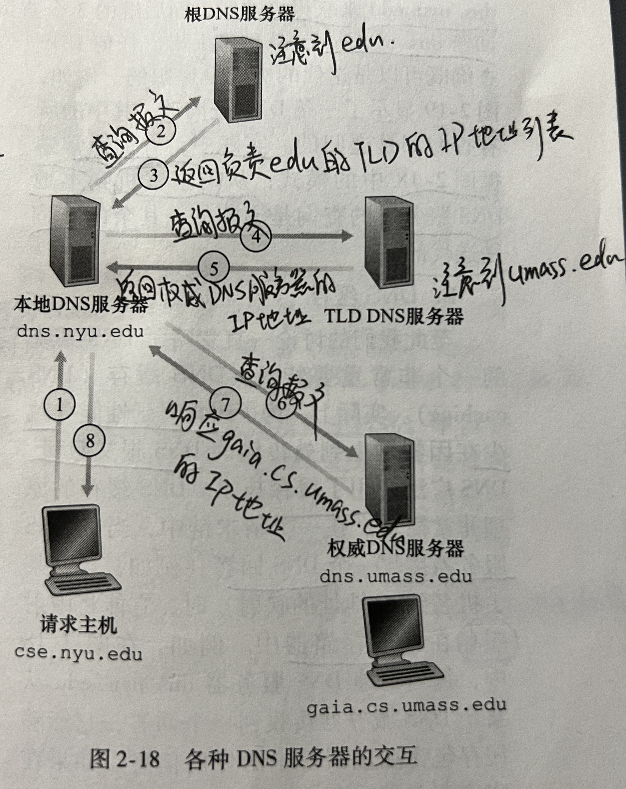
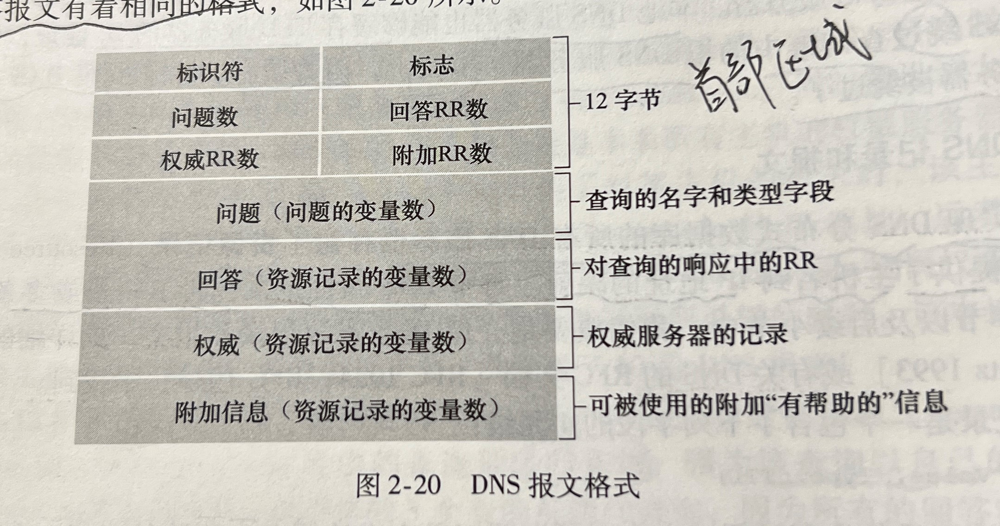

计算机网络-第2章 应用层
2.4 DNS：因特网的目录服务
2.4.1 DNS提供的服务
DNS（Domain Name System）域名系统的主要任务：进行主机名到IP地址转换的目录服务。
DNS是：1.一个由分层的DNS服务器实现的分布式数据库。2.一个使得主机能够查询分布式数据库的应用层协议。
DNS协议运行在UDP之上，使用53号端口。
DNS通常由其他应用层协议所使用，包括HTTP、SMTP和FTP，将用户提供的主机名解析为IP地址。
举一个例子，运行在某用户主机上的浏览器请求URL www.someschool.edu/index.html 时：
- 同一台用户主机上运行着DNS应用的客户端
- 浏览器从上述URL中抽取出主机名 www.somechool.edu ，并将主机名传给DNS应用的客户端
- DNS客户向DNS服务器发送一个包含主机名的请求
- DNS客户最终会收到一份回答报文，包含对应该主机名的IP地址
- 浏览器接收到来自DNS的该IP地址，并向位于该IP地址80端口的HTTP服务器进程发起TCP连接
除了进行主机名到IP地址的转换之外，DNS还提供一些重要服务：
- 主机别名
- 邮件服务器别名
- 负载分配：繁忙的站点被冗余分布在多台服务器上，每个有着不同的IP地址。一个IP地址集合因此与同一个规范主机名相联系。客户发出DNS请求时，服务器用IP地址的整个集合进行响应，但在每个回答中循环这些地址次序。实现负载分配。
2.4.2 DNS工作机理概述
DNS的一种简单设计是在因特网上只使用一个DNS服务器，该服务器包含所有映射。但这种集中式设计有如下问题：
- 单点故障：如果该服务器崩溃，整个因特网随之瘫痪
- 通信容量：单个服务器需要处理所有DNS查询
- 远距离的集中式数据库：单个服务器不可能邻近所有客户
- 维护
因此，DNS采用分布式的设计方案
2.4.2.1 分布式、层次数据库
DNS使用大量的DNS服务器，它们以层次方式组织，分布在全世界范围内。
大致来说，有3种类型的DNS服务器：根DNS服务器、顶级域（Top-Level Domain / TLD）DNS服务器（com、edu、org、cn、uk、jp）和权威DNS服务器。
还有一类重要的DNS服务器：本地DNS服务器（local DNS Server）。每个ISP都有一台本地DNS服务器。
当主机发出DNS请求时，该请求被发往本地DNS服务器，它起着代理的作用，并将该请求转发到DNS服务器层次结构中。
例子：假设主机cse.nyu.edu想知道主机gaia.cs.umass.edu的IP地址

在这个例子中，假设了TLD服务器知道用于主机的权威DNS服务器的IP地址，一般而言这种假设并不总是正确的，TLD服务器只是知道中间的某个DNS服务器，该中间DNS服务器依次才能知道用于该主机的权威DNS服务器。
这个例子利用了递归查询和迭代查询，从cse.nyu.edu到dns.nyu.edu发出的查询是递归查询，因为该查询以自己的名义请求dns.nyu.edu来获得该映射。而后继的3个查询是迭代查询，因为所有的回答都是直接返回给dns.nyu.edu。
实践中，查询通常是：从请求主机到本地DNS服务器的查询是递归的，其余的查询是迭代的。
2.4.2.2 DNS缓存
DNS缓存能改善时延性能并减少在因特网上到处传输的DNS报文数量。
原理：在一个请求链中，当某DNS服务器接收一个DNS回答时，它能将映射缓存在本地存储器中。
由于主机和主机名与IP地址间的映射并不是永久的，DNS服务器在一段时间后（通常是两天）将丢弃缓存的信息。
2.4.3 DNS记录和报文
共同实现DNS分布式数据库的所有DNS服务器存储了资源记录（Resource Record / RR），RR提供了主机名到IP地址的映射。每个DNS回答报文包含了一条或多条RR。
RR是一个包含了下列字段的4元组：(Name, Value, Type, TTL)
- TTL是该记录的生存时间，决定了RR应当从缓存中删除的时间
- Name和Value的值取决于Type
- 如果Type = A。Name是主机名，Value是该主机名对应的IP地址：(relay1.bar.foo.com,145.37.93.126,A)
- 如果Type = NS。Name是个域，Value是个知道如何获得该域中主机IP地址的权威DNS服务器的主机名：(foo.com,dns.foo.com,NS)
- 如果Type = CNAME。Name是主机别名，Value是这个主机对应的规范主机名：(foo.com,relay1.bar.foo.com,CNAME)
- 如果Type = MX。Name是邮件服务器的别名，Value是它对应的规范主机名：(foo.com,mail.bar.foo.com,MX)
如果一台DNS服务器是用于某特定主机名的权威DNS服务器，那么该DNS服务器会有一条包含用于该主机名的类型A记录。
如果服务器不是用于某主机名的权威DNS服务器，那么该服务器将包含一条类型NS记录，该记录对应于包含主机名的域，还包括一条类型A记录，提供了在NS记录的Value字段中的DNS服务器的IP地址。
2.4.3.1 DNS报文
DNS报文只有DNS查询和回答报文，且它们有相同的格式。

- 前12个字节是首部区域。第一个字段是标识符，是一个16比特的数，用于标识该查询，这个标识符会被复制到对查询的回答报文中，以便让客户用它来匹配发送的请求和接收到的回答。第二个字段标志中含有若干标志，1比特的“查询/回答”标志位指出报文是查询报文（0）还是回答报文（1）。还可以标志服务器是权威DNS服务器、客户希望执行递归查询时设置“希望递归”标志位。
- 问题区域包含着正在进行的查询信息。包括：1.名字字段，包含正在被查询的主机名字。2.类型字段，指出有关改名字的正被询问的问题类型（类型A或类型MX…）。
- 回答区域包含了对最初请求的名字的RR。可以包含多条RR，因此一个主机名能够有多个IP地址。
- 权威区域包含了其他权威服务器的记录。
- 附加区域包含了其他有帮助的记录。
2.4.3.2 在DNS数据库中插入记录
要向注册登记机构注册域名时，需要向机构提供基本和辅助权威DNS服务器的名字和IP地址。对这两个权威DNS服务器，机构确保将一个类型NS和一个类型A的记录输入到TLD com服务器。
2.5 P2P文件分发
2.5.1 P2P体系结构的扩展性
例子：将一个文件分发给一个固定对等方集合。
us表示服务器接入链路的上载速率，ui表示第i对等方接入链路的上载速率，di表示第i对等方接入链路的下载速率，F表示被分发的文件长度（以比特计），N表示要获得该文件副本的对等方的数量。
分发时间（distribution time）是所有N个对等方的到该文件的副本所需要的时间。
先来考虑对C-S体系结构的分发时间，表示为Dcs：
- 服务器必须向N个对等方传输一个副本，因此服务器必须传输NF比特，因为服务器的上载速率是us，因此分发该文件的时间必定是至少为NF/us。
- 令dmin表示具有最小下载速率的对等方的下载速率，即dmin=min{d1,d2,…,dN}。具有最小下载速率的对等方不可能在少于F/dmin秒时间内获得所有比特。因此最小分发时间至少为F/dmin。
- 结合两式，得到：Dcs >= max{NF/us, F/dmin}。取这个下界作为实际发送时间，即Dcs = max{NF/us, F/dmin}。
对足够大的N，C-S分发时间由NF/us确定。所以该分发时间随着对等方N的数量线性地增加。
下面对P2P体系结构进行分析：
- 在分发的开始，只有服务器具有文件。为了使对等方得到该文件，服务器必须经接入链路至少发送该文件的每个比特一次。因此，最小分发时间至少是F/us。
- 与C-S结构一样，具有最低下载速率的对等方不能以小于F/dmin秒的分发时间获得所有F比特。因此最小分发时间至少为F/dmin。
- 系统整体的总上载能力等于服务器的上载速率加上每个单独的对等方的上载速率，即utotal=us+u1+…+uN。系统必须向N个对等方交付F比特，因此总共交付NF比特，这不能以快于utotal的速率完成。因此最小分发时间至少是NF/(us+u1+…+uN)。
- 因此，P2P的最小分发时间DP2P >= max{F/us, F/dmin, NF/utotal} 。取下界为最小分发时间，DP2P = max{F/us, F/dmin, NF/utotal}。
在上图中，F/u=1小时，us=10u，dmin>=us。因此，在一个小时中，一个对等方能够传输整个文件，服务器的传输速率使对等方上载速率的10倍。
对于C-S结构，随着对等方数量的增加，分发时间呈线性增长且没有界。
对于P2P，最小分发时间不仅总是小于C-S的分发时间，并且对于任意的对等方数量N，分发时间总是小于1小时。
2.5.2 BitTorrent
BitTorrent是一种用于文件分发的流行P2P协议。用BitTorrent的术语来讲，参与一个特定文件分发的所有对等方的集合被称为一个洪流(torrent)。在一个洪流中的对等方彼此下载等长度的文件块(chunk)，典型的块长度为256KB。
一个对等方首次加入一个洪流时，它没有块，随着时间的流逝，它累积了越来越多的块，它下载块时也为其他对等方上载了块。一旦某对等方获得了整个文件，它可能离开洪流，也可能继续留在洪流中为其他对等方上载块。
每个洪流具有一个基础设施节点，称为追踪器(tracker)。当一个对等方加入某洪流时，它向追踪器注册自己，并周期性地通知追踪器它仍在该洪流中。
2.6 视频流和内容分发网
2.6.1 HTTP流和DASH
在HTTP流中，视频只是存储在HTTP服务器中作为一个普通的文件，每个文件有一个特定的URL。客户看视频时，客户与服务器创建一个TCP连接并发送该URL的HTTP GET请求。服务器以尽可能快的速率，在一个HTTP响应报文中发送该视频文件。在客户一侧，字节被收集在客户应用缓存中。一旦该缓存中的字节数量超过预先设定的门槛，应用程序就开始播放。
尽管HTTP流已得到广泛部署，但有一个缺陷，即所有客户接收到相同编码的视频，尽管对不同的客户而言，客户可用的带宽大小有很大不同。因此出现了经HTTP的动态适应性流（Dynamic Adaption Streaming over HTTP / DASH）。在DASH中，视频编码为几个不同的版本，每个版本具有不同的比特率，对应不同的质量水平。DASH允许客户使用不同的以太网接入速率流式播放具有不同编码速率的视频。
使用DASH之后，每个视频版本存储在HTTP服务器中，每个版本都有一个不同的URL。HTTP服务器也有一个告示文件（manifest file），为每个版本提供了一个URL及其比特率。客户首先请求该告示文件并得知各种各样的版本，然后在HTTP GET请求报文中对每块指定一个URL和一个字节范围，一次选择一块。在下载块的同时，测量接收带宽，并运行一个速率决定算法来选择下次请求的块。
2.6.2 内容分发网CDN
为了应对向分布于全世界的用户分发巨量视频数据，几乎所有主要的视频流公司都利用内容分发网（Content Distribution Network, CDN）。CDN管理分布在多个地理位置上的服务器，在它的服务器中存储视频的副本。
CDN可以是专用CDN，即它由内容提供商自己所拥有。也可以是第三方CDN，它代表多个内容提供商分发内容。
CDN通常采用两种不同的服务器安置原则：
- 深入。通过在遍及全球的接入ISP中部署服务器集群来深入到ISP的接入网中。目标是靠近端用户，通过减少端用户和CDN集群之间链路和路由器的数量，改善用户感受到的时延和吞吐量。
- 邀请做客。通过在少量关键位置建造大集群来邀请到ISP做客。CDN通常将它们的集群放置在因特网交换点（IXP）。与深入设计原则相比，邀请做客设计通常产生较低的维护和管理开销，但以较高的时延和较低的吞吐量为代价。
一旦CDN的集群准备就绪，它就可以跨集群复制内容。许多CDN没有将视频推入它们的集群，而是使用一种简单的拉策略：如果客户向一个未存储该视频的集群请求某视频，则该集群检索该视频，向客户流式传输视频时在本地存储一个副本。当集群存储器变满时，删除不经常请求的视频。
2.6.2.1 CDN操作
当用户主机中的一个浏览器指令检索一个特定的视频时，CDN必须截获该请求，以便能够：1.确定此时适合用于该客户的CDN服务器集群。2.将客户的请求重定向到该集群的某台服务器。
大多数CDN利用DNS来截获和重定向请求。
例子：假定一个内容提供商NetCinema雇佣第三方CDN公司KingCDN来向客户分发视频。
- 用户访问位于NetCinema的Web网页
- 当用户点击链接 http://video.netcinema.com/6Y7B23V 时，该用户主机发送了一个对于 video.netcinema.com 的DNS请求
- 用户的LDNS服务器将该DNS请求中继到一台用于NetCinema的权威DNS服务器，该服务器观察到“video”字符串，权威DNS服务器向LDNS返回一个KingCDN域的主机名，为了将DNS请求移交给KingCDN，如a1105.kingcdn.com
- DNS请求进入了KingCDN专用DNS基础设施。用户的LDNS发送第二个请求，是对a1105.kingcdn.com的DNS请求，KingCDN的DNS系统最终向LDNS返回KingCDN内容服务器的IP地址
- LDNS向用户主机转发内容服务CDN节点的IP地址
- 一旦客户收到KingCDN内容服务器的IP地址，它与具有该IP地址的服务器创建一条直接的TCP连接，并发出对该视频的HTTP GET请求
2.6.2.2 集群选择策略
任何CDN部署，其核心是集群选择策略，即动态地将客户定向到CDN中的某个服务器集群或数据中心的机制。
一种简单的策略是指派客户到地理上最为邻近的集群。使用商用地理位置数据库，每个LDNS IP地址都映射到一个地理位置。这种简单的策略忽略了时延和可用带宽随因特网路径时间而变化。
为了基于当前流量条件为客户决定最好的集群，CDN能够对其集群和客户之间的时延和丢包性能执行周期性的实时测量。例如，CDN能够让它的每个集群周期性地向位于全世界地所有LDNS发送探测分组。这种方法的一个缺点是许多LDNS被配置为不会响应这些探测。